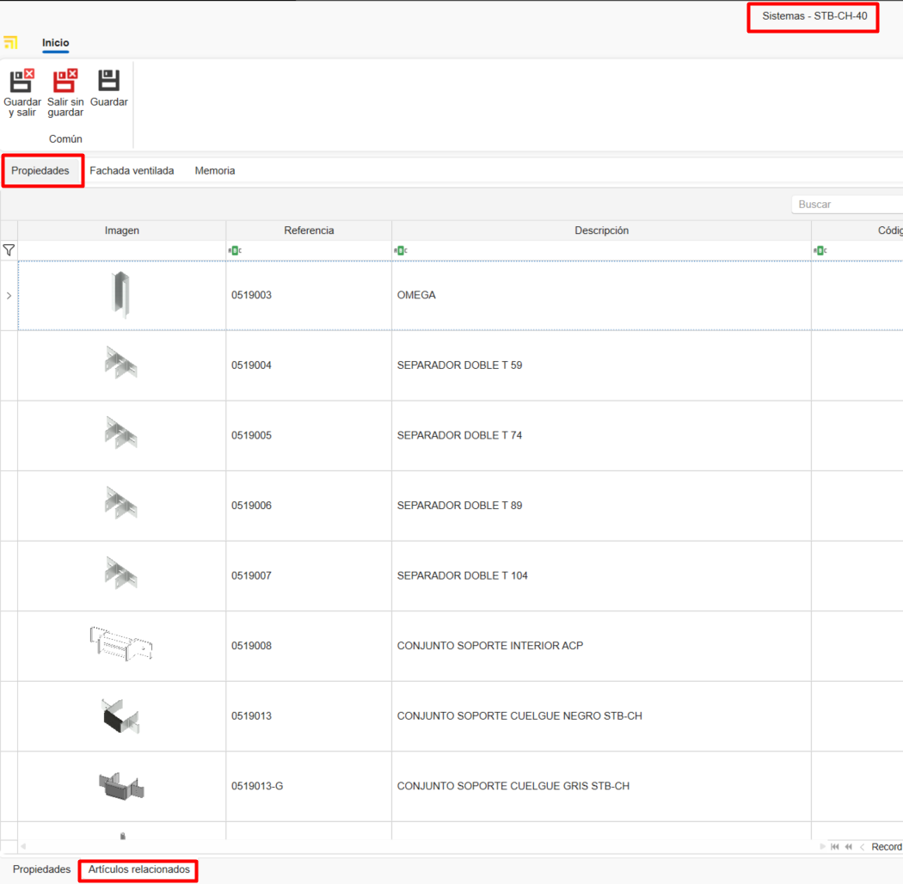
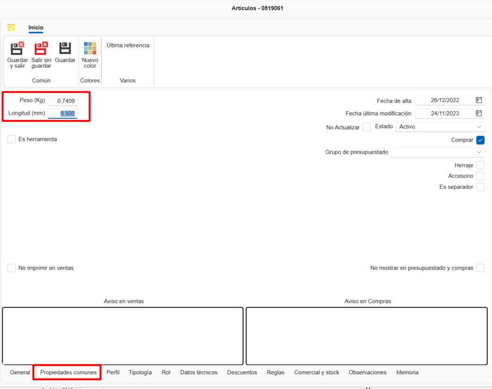
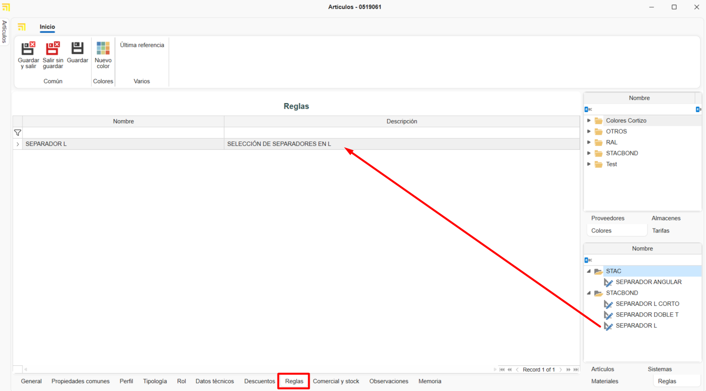

Creating custom materials in enMATERIALS
1. Introduction
This guide explains how to create and manage custom materials in enMATERIALS. Follow the steps carefully to ensure materials are defined and organized correctly.
2. Material definition
Materials can be classified into different types according to their properties. The main types are described below:
2.1 Material types
- Pieces: Calculated per unit; the most common and easiest materials to define.
- Bars: Calculated per linear meter and require additional information such as length.
- Surfaces: Calculated per square meter and may include extra attributes.
- Seals / Gaskets (Juntas): Calculated per linear meter and have special application specifications.
2.2 Items and colors
Materials are defined in the Items section; finishes are managed in Colors and raw materials in Materials.

3. Creating materials
To register a material, follow these steps:
3.1 Define an item
- Go to the Items section.


- In the General tab assign a reference, a calculation type and a material.

- Organize items using classification fields such as "Family1", "Family2", etc.

- Complete the purchase description (for suppliers) and the sales description (for customers).

- Assign a base material by dragging it from the materials tree on the right pane.

- Add images to the item. Optimize images to avoid database performance issues.

-
In the Warehouse Information section indicate for that article some fields such as:
-
Main warehouse: Defines the warehouse where the article will be located by default in the system.
- Location: Specifies the exact physical location within the warehouse (shelf, aisle, level, etc.).
- Assembled at destination: By checking this box, the article will be configured for assembly at destination by default. These materials will appear at the Picking station in enCONTROL.
-
Stock control: By activating this option, the article will be included in the stock replenishment section for inventory tracking.

Note: The General section is common to all calculation types.
3.2 Creating colors
- Go to the Colors section.


- Assign a reference, name and a color or texture.

- Assign a supplier from the Supplier tab by dragging the supplier from the right pane.

3.3 Creating a base material
- Go to the Materials section.


- Enter the name, color and check the Material box to mark it as a raw material.

Note: To automatically generate RAL color swatches and base materials, select Essentials on the Home ribbon.


4. Supplier management
Before registering a material, verify whether the supplier already exists in ENBLAU under Purchases → Suppliers. If not, create the supplier following the defined standards.

5. Commercial and stock
After defining the material, complete its commercial and stock information.
5.1 Purchase data and suppliers
Assign suppliers, units and purchase prices per color of the material.

Note: You can add a supplier reference if it differs from the one in the database.
5.2 Reference assignment
Each color/material will have a unique reference (Item Reference + Color Reference). Drag one or more colors from the Colors tab on the right pane.

6. Material typology and additional data
6.1 Pieces
- Individual materials managed per unit (accessories, screws, etc.).
- Priced per unit.
- In the Common Properties tab you can add custom fields if needed.

6.2 Bars
- Materials defined by length and other technical attributes.
- Priced per linear meter.
- In the Common Properties tab indicate the bar length (mandatory).

- For profiles, add optional information such as safety distance and minimum/maximum remnant length.

Note: Sections like Typology, Role, Technical Data, Discounts and Rules are not required for creating custom materials — they are relevant only to drawn materials.
6.3 Surfaces
- Materials defined per square meter (glass, sheets, etc.).
- Priced per m².
- In the Common Properties tab indicate the height and width of the surface.

- In the Valuation and technical data tab enter details depending on the surface type and requirements. For example: thickness, surface type, prices per m² (check m² by supplier if price varies by supplier), etc.

6.4 Seals / Gaskets (Juntas)
- Materials defined per linear meter.
- Priced per linear meter.
- In the Common Properties tab you can indicate the length if necessary.

7. Standards to follow
To ensure correct management follow these standards:
- Use uppercase for names and references.
- Verify suppliers and materials exist before registering them.
- Keep a consistent format for material and color references.
- Always save changes.
8. Creating ENBLAU purchase documents
To check whether an item is registered open ENBLAU and create a purchase document:
- Create a purchase order and select the supplier.
- In the purchase order find and add the material from the right pane. Drag and select the associated color.

- Validate the price assigned to the supplier.

- If the material has more than one supplier assigned you can select the desired supplier by double‑clicking it.
9. Creation of enCLAD systems and materials
Creation of systems and materials for ventilated facades in enCLAD.
9.1. Systems
From the start window, in the top bar, access System.

- To create a new system, select New in the top bar.

9.1.2. Properties
From the Properties tab, located at the bottom, the following system fields are defined:
- Name
- Description
- Supplier
- Family 1 and 2 (organization by levels)
- Image
- Status: Active, Temporarily disabled or Discontinued.
- System typology
In this case, check the Ventilated facade box.

From the Related articles tab, at the bottom, the list of materials linked to the system is displayed.

9.1.3. Ventilated facade
From the System type tab, at the top, a window will be displayed where you can select the system type:
- Hanging system
- Male-female system
- Bonded system
- Riveted system
In the left side window, the specific parameters of the system type are defined.
In the bottom window, other common parameters among the different system types are defined, such as:
- Standard end distance
- Minimum footprint – Vertical
- Maximum footprint – Vertical
- Standard footprint – Vertical
- Minimum footprint – Horizontal
- Maximum footprint – Horizontal
- Standard footprint – Horizontal
- Minimum architrave
- Maximum architrave
- Standard architrave
- Allow architrave (checkbox)
In the central window, the design of the ventilated facade corresponding to the selected system type is displayed.
If the system type is Hanging system, an additional window is enabled for defining the machining design:
- Hanging machining tab
Allows importing the drawing in.dwg/.dxfformat. - Other machining tab
Allows defining the machining using parameters.
In the right side window, System materials, the corresponding articles are added to the system using dropdown fields:
- Sliding rail
- Formed rivet
- Hanging support
- Formed flat bar
- Bracket reinforcement

ℹ️ Note: Depending on the selected system type, different parameters will be enabled.
From the Options tab, at the bottom, a window will be displayed with the corner options available depending on the system type.

From the Trims tab, at the bottom, a window will be displayed where you can define:
Trim options: Define the trim options for the system in the option deployment.
- Coping
- Bottom trim
- Cavity closure
- Lintel window
- Windowsill window
- Jamb window
Values: Define the values for each selected option.
Folds: Define the length and rotation of the folds for each selected value.

From the Stiffeners tab (only available for hanging type systems), the list of stiffener type materials linked to the system is displayed.

9.1.4. Clone systems
From Systems, in the top ribbon, the Clone option is available.
This functionality copies all the properties of the selected system in the list.


9.2. Definition of enCLAD articles
Define articles from the articles module:
Create a new article:
1. General
Fill in the general information fields according to the selected calculation type:
- Bar
- Piece
- Joint
- Surface

ℹ️ Note: It is mandatory to indicate the ventilated facade system to which the material will be linked.
2. Common properties
Fill in the common properties fields.
Depending on the material's calculation type, different fields will appear.
Examples:
- Bar

- Spacer piece

3. Role
Check the profile role type (only for bar type articles) and define its value in the ventilated facade section.

4. Technical data
Import the .dwg/.dxf file of the material and define the drawing dimensions, such as:
- Interior dimensions
- Exterior dimensions
- Depth
- Insertion point
- Other parameters

ℹ️ Note: The Technical data tab is only available for bar and joint calculation types.
5. Rules
Assign a rule to the profile (only for bars), by dragging a previously defined rule from the bottom right side window, in the Rules tab.

6. Commercial and stock (assign colors)
Each color and material will have a unique reference (Article Reference + Color Reference). Drag one or more colors from the color tab in the right window, from the Commercial and stock tab.
ℹ️ Note: Information on how to create new colors go to 3.2. Creation of colors.
9.3. Definition of rules
From the start section, access the list Article addition rules and select Rules in profiles.

Create a New rule in profiles.
1. Properties
Fill in the rule properties fields:
- Name
- Description
- Families (folder levels)

2. Related articles
Relate the bar type articles by dragging them from the right side window in Articles.

3. Restrictive systems
Indicate the systems to restrict for that rule, by dragging them from the right side window in Systems.

4. Accessories
Indicate the option and/or the article to be generated, by dragging it from the right side window in Accessories.

ℹ️ Note: A different configuration can be defined for each calculation type from the corresponding tab at the bottom of the window.
10. Conclusion
By following this manual, you will be able to register and manage materials efficiently in the system, ensuring proper organization and optimization of purchasing and sales processes.
 Español
Español
 English
English
 Italiano
Italiano
 Português
Português